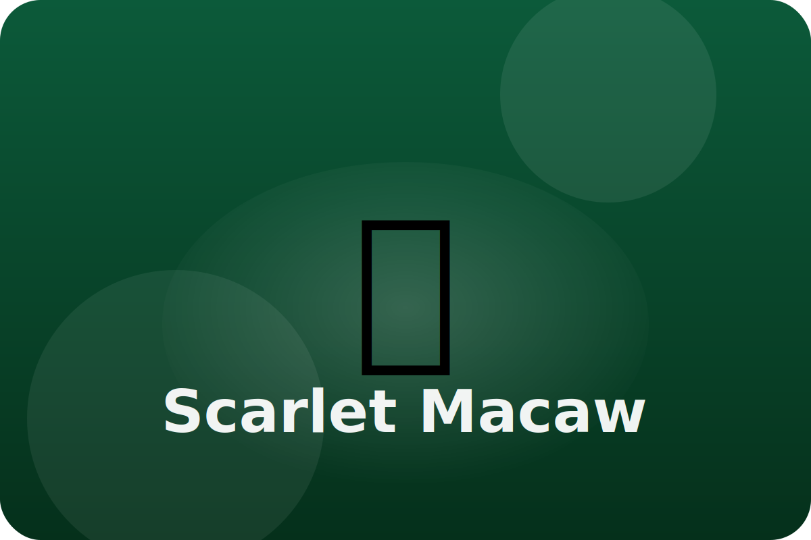

Rainforest
Noisy rainforest storytellers
Scarlet macaws travel with their partners, filling the canopy with squawks as they search for nuts, berries, and clay.
Powerful Beak
A macaw's beak is strong enough to crack hard nuts and seeds that other animals cannot open.
Social Squawks
Loud calls help partners stay together and warn others about predators.
Clay Snacks
Eating clay from riverbanks gives the macaws extra minerals and helps their tummies feel good after eating sour fruit.